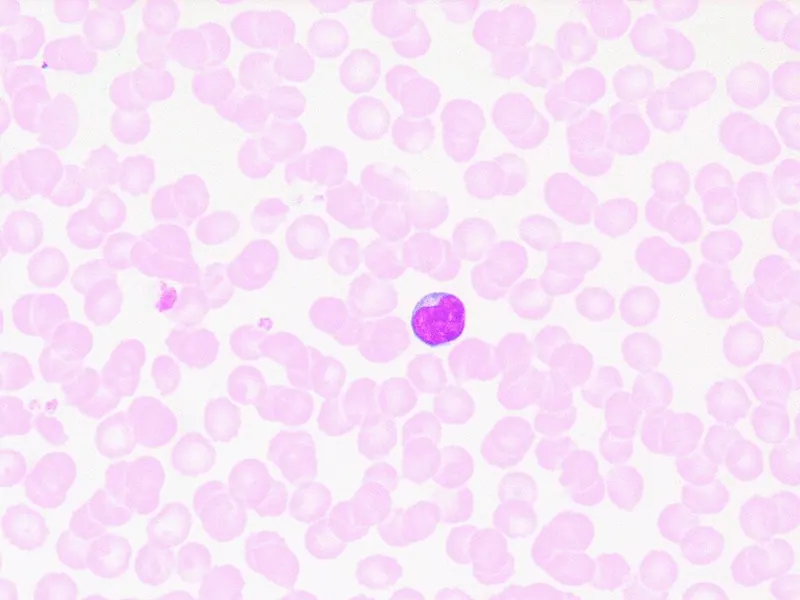
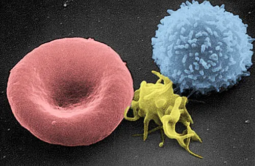

Cambridge Lower Secondary · Science 0893 · Stage 8 · Biology
Blood and Its Components
Red blood cells, white blood cells and plasma: what each looks like and what it does — transporting oxygen, protecting against pathogens, and carrying cells, nutrients and carbon dioxide.
British & IGCSE › Checkpoint 8 › Checkpoint 8 Science — Complete Course
- Describe the components of blood and their functions (8Bs.02):
- red blood cells transport oxygen
- white blood cells protect the body against pathogens
- plasma transports blood cells, nutrients and carbon dioxide
- Skills used on this page: describing patterns in data, calculating percentages, using a microscope diagram (8TWSa.02, 8TWSa.05)
An adult has about 5 litres of blood. Blood is pumped by the heart through the blood vessels to every cell in the body. It looks like a red liquid, but it is really a mixture: cells floating in a liquid. At Stage 8 you must know three components (parts) of blood and the job of each one.
| Word / phrase | Meaning / use |
|---|---|
| component | مُكوِّن — one part of a mixture |
| red blood cell | كرة دم حمراء — carries oxygen |
| white blood cell | كرة دم بيضاء — protects the body against pathogens |
| plasma | البلازما — the yellow liquid part of blood |
| haemoglobin | الهيموجلوبين — red substance in red blood cells that carries oxygen |
| pathogen | ميكروب مُمرِض — a microorganism that causes disease |
| nutrients | مواد غذائية — e.g. glucose from digested food |
| transport | ينقل — carry from one place to another |
| biconcave | مقعّر الوجهين — dimpled in on both sides |
| infection | عدوى — pathogens growing in the body |
What is blood made of?
If blood is left to stand in a tube (or spun fast in a machine), it separates into layers. The cells are heavier than the liquid, so they sink.
| Component | What it looks like | Function (what you must know) |
|---|---|---|
| Red blood cells | Small, red, biconcave discs (dimpled on both sides); no nucleus; millions in every drop | Transport oxygen from the lungs to all body cells |
| White blood cells | Larger than red cells; have a nucleus; far fewer of them | Protect the body against pathogens (microorganisms that cause disease) |
| Plasma | Pale yellow liquid, mostly water | Transports blood cells, nutrients (such as glucose) and carbon dioxide |
Extra (not needed for your objective): blood also contains platelets, tiny pieces of cells that help blood to clot when you cut yourself.

Red blood cells: carrying oxygen
Red blood cells are full of a red substance called haemoglobin. In the lungs, where there is a lot of oxygen, oxygen joins with haemoglobin. The blood is pumped round the body. In the capillaries next to body cells, where there is little oxygen, the haemoglobin releases the oxygen, which passes into the cells. Cells use oxygen in respiration to release energy from glucose.

| Feature of a red blood cell | How it helps the cell carry oxygen |
|---|---|
| Contains haemoglobin | Haemoglobin joins with oxygen in the lungs and releases it in the body. |
| No nucleus | More space inside for haemoglobin, so it can carry more oxygen. |
| Biconcave shape (a disc pushed in on both sides) | Large surface area for its size, so oxygen moves in and out quickly; the thin centre means oxygen does not have far to go. |
| Small and flexible | Can squeeze through the narrowest capillaries, right next to the cells. |
Haemoglobin contains iron. A diet with too little iron means the body cannot make enough haemoglobin, so the blood carries less oxygen and the person feels tired. (You will meet iron again on the diet page.) Red blood cells, like white blood cells, are made in the bone marrow inside some bones.
White blood cells: protecting against pathogens
A pathogen is a microorganism that causes disease — for example some bacteria and viruses. Pathogens can enter through cuts, the nose and mouth, or in food and water. White blood cells protect the body against them. There are different kinds:
- Some white blood cells engulf (surround and swallow) pathogens and digest them.
- Others make antibodies — chemicals that stick to a pathogen so it can be destroyed.
When you have an infection, your body makes more white blood cells, so a blood test showing many white blood cells can be a sign of infection. White blood cells are not red: they have no haemoglobin, so they do not carry oxygen.
كرات الدم الحمراء بتشيل الأكسجين (Red = oxygen)، وكرات الدم البيضاء بتحمي الجسم من الميكروبات المُمرضة (pathogens)، والبلازما سائل أصفر بيشيل كرات الدم والمواد الغذائية وثاني أكسيد الكربون. احفظ الثلاثة بالترتيب ده — ده اللي بيتسأل في الامتحان.
Plasma: the transport liquid
Plasma is a pale yellow liquid, mostly water, which makes up a little over half of the blood. Many substances are dissolved in it. For Stage 8, plasma transports:
- blood cells — the red and white blood cells float in the plasma and are carried along with it;
- nutrients — for example glucose from digested food, which passes into the blood in the small intestine and is carried to all cells;
- carbon dioxide — a waste gas made by cells in respiration, carried to the lungs to be breathed out.
Model (analogy): blood is like a river carrying boats. The water (plasma) carries the boats along and also carries things dissolved in it (nutrients and carbon dioxide). The red boats are delivery boats loaded with oxygen; the white boats are police boats that look for and remove invaders (pathogens). Limitation: blood goes round in a closed circuit, pumped by the heart; a river flows one way, pulled by gravity.
Worked examples
Worked example 1 — matching Draw a line from each component of blood to its function. [3] Components: plasma; red blood cell; white blood cell. Functions: protects the body against pathogens; transports oxygen; transports nutrients and carbon dioxide.
- plasma → transports nutrients and carbon dioxide [1]
- red blood cell → transports oxygen [1]
- white blood cell → protects the body against pathogens [1]
Common mistake: drawing two lines from one box. Unless the question says so, each box has one line.
Worked example 2 — adaptations Red blood cells have no nucleus and a biconcave shape. Explain how each feature helps the cell do its job. [2]
- No nucleus: there is more space for haemoglobin, so the cell carries more oxygen [1].
- Biconcave shape: a large surface area, so oxygen can diffuse in and out quickly [1].
Common mistake: "The shape lets it carry more blood." A red blood cell carries oxygen, not blood.
Worked example 3 — a blood test A blood test is taken when Yusuf is well and again when he has a chest infection. when | white blood cells in 1 mm³ of blood well | 6000 with infection | 15 000 (a) Calculate the increase. [1] (b) Explain why the number increased. [2]
- (a) 15 000 − 6000 = 9000 white blood cells in 1 mm³.
- (b) Pathogens (bacteria or viruses) have entered his body [1], so more white blood cells are made to protect the body / destroy the pathogens [1].
Worked example 4 — a percentage from the tube A tube of settled blood is 60 mm high. The red blood cell layer is 27 mm. (a) Calculate the percentage of red blood cells. [2] (b) The white cell layer is very thin. Suggest why. [1]
- (a) 27 ÷ 60 × 100 = 0.45 × 100 = 45%.
- (b) There are far fewer white blood cells than red blood cells (hundreds of red blood cells for every white blood cell).
Worked example 5 — red blood cells at altitude Athletes often train in mountains, high above sea level, where there is less oxygen in the air. After a few weeks their blood contains more red blood cells. Suggest why this helps them run faster when they return to sea level. [2]
- More red blood cells can carry more oxygen [1],
- so more oxygen reaches the muscle cells for respiration, which releases more energy [1].
Worked example 6 — the journey of a nutrient Describe how glucose from a meal reaches a cell in the brain. [2]
- Glucose from digested food passes into the blood in the small intestine and dissolves in the plasma [1].
- The heart pumps the blood (plasma) round the body to the brain, where glucose leaves the capillaries and enters the cells [1].
- Saying white blood cells carry oxygen, or red blood cells fight disease.
- Saying plasma "is water". It is mostly water, but it carries cells and many dissolved substances.
- Saying red blood cells carry carbon dioxide. For this Stage 8 objective, carbon dioxide is carried in the plasma.
- Writing "germs" or "bad things" instead of pathogens, and "food" instead of nutrients.
- Saying red blood cells have a nucleus. They do not; white blood cells do.
- Confusing pathogens (microorganisms that cause disease) with antibodies (made by white blood cells).
- Matching lines: component → function. Learn the three functions word for word.
- A microscope drawing with letters: "Which letter is a white blood cell?" — larger, with a nucleus.
- "Name the part of the blood that transports carbon dioxide / nutrients." — plasma.
- Data: a blood-test table (red or white cell numbers). Calculate a difference or a percentage, then explain using the function of the cells.
- Link questions: red blood cells and respiration (oxygen), white blood cells and infection, plasma and digestion (nutrients).
لو السؤال قالك "Explain" عن كرات الدم الحمراء: اربط الشكل بالوظيفة. مفيش نواة ← مكان أكتر للهيموجلوبين ← تشيل أكسجين أكتر. الشكل مقعّر من الناحيتين ← مساحة سطح كبيرة ← الأكسجين يدخل ويخرج بسرعة.
Practice
- Red blood cells transport oxygen (using haemoglobin); no nucleus; biconcave shape for a large surface area.
- White blood cells protect the body against pathogens; they have a nucleus and increase during an infection.
- Plasma is the yellow liquid that transports blood cells, nutrients (e.g. glucose) and carbon dioxide.
- A pathogen is a microorganism that causes disease.
- In data questions: calculate, then explain using the job of the cells.
All pages in this course
Start here
- Stage 8 Science: The Tests and How to Prepare
- Thinking and Working Scientifically: Models, Investigations and Analysing Results
Biology
- Joints and Antagonistic Muscles
- Blood and Its Components
- Breathing, Gas Exchange and Diffusion in the Lungs
- A Balanced Diet, Energy Stores and Lifestyle
- Aerobic Respiration
- Ecosystems, Bioaccumulation and Invasive Species
Chemistry
- The Structure of the Atom
- Purity, Concentration and Chromatography
- Word Equations, Exothermic and Endothermic Reactions
- The Reactivity of Metals
- Impure Products and Solubility of Salts
Physics
- Speed and Distance–Time Graphs
- Balanced and Unbalanced Forces, and Moments
- Pressure, Particles and Diffusion
- Reflection and Refraction
- Dispersion and Colour
- Magnetic Fields and Electromagnets
Earth and space
- The Earth's Magnetic Field and Earth's Resources
- Climate, Weather and Climate Change
- Galaxies and Asteroids
Practice tests